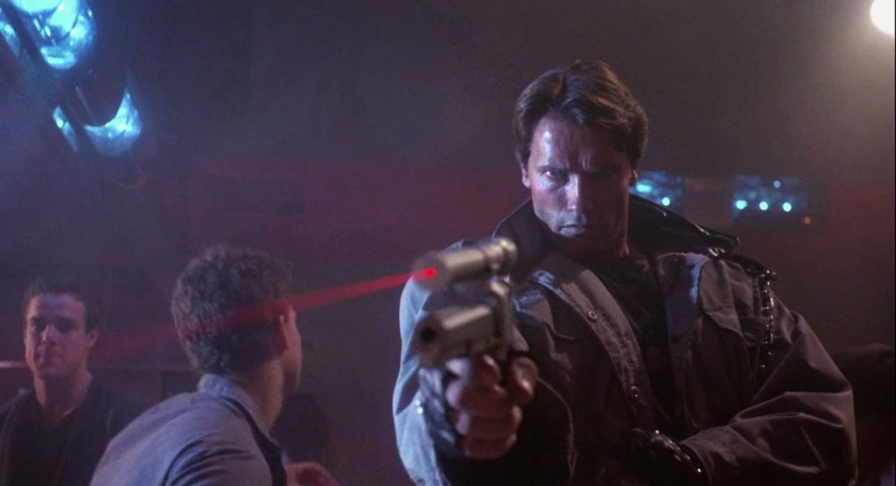

 En el año 2029, después de devastar la Tierra y esclavizar a la humanidad, las máquinas, gobernadas por la inteligencia artificial conocida como Skynet, están a punto de perder la guerra contra la resistencia humana liderada por John Connor. Frente a esa situación, las máquinas entienden que asesinar a John Connor en el presente sería irrelevante, dado que ya ha conducido a la resistencia humana a la victoria. Por lo tanto, Skynet elabora su estrategia decidiendo eliminar al líder enemigo antes que nazca. Para ello envía al año 1984 a un Terminator T-800 modelo Cyberdyne 101, un cíborg exterminador (Arnold Schwarzenegger), a través de una máquina del tiempo, con la misión de exterminar a Sarah Connor (Linda Hamilton), madre de John, antes que sea concebido. Enterados del plan para asesinar a la mujer que dará a luz al único hombre capaz de salvar a la humanidad, la resistencia también consigue acceder a la máquina del tiempo y logra enviar a un soldado humano, Kyle Reese (Michael Biehn), con la misión de protegerla del T-800.